비서-2급 (2013-11-10 기출문제)
1과목: 비서실무
1. 다음은 때와 장소에 따른 상석을 설명한 사례들이다. 가장 부적절한 것은?
- 손님 접대시 응접실 내의 상석은 입구에서 먼 쪽, 의자의 순서는 소파 등받이가 있는 것이 우선이다.
- 양식에서는 항상 호스트(호스티스)의 우측이 최상석이고 호스트(호스티스)로부터 가장 먼 쪽이 말석이다.
- 자동차의 승차순위는 운전기사의 유무에 관계없이 뒷좌석의 운전석 대각선 방향이 가장 상석이다.
- 열차좌석에 있어서는 차 진행방향을 바라보는 창가 쪽이 상석이다.
(정답률: 40%)

2. 다음 상사의 해외출장 항공 일정에 대한 설명으로 적절하지 않은 것은?
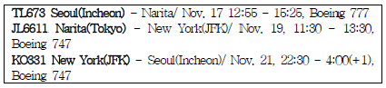
- 상사는 11월 17일 오후에 TL673편으로 동경 나리타 공항에 도착한다.
- 상사는 일본에서 3일, 미국에서 3일간 체류한다.
- 상사는 한국 인천 공항에 11월 21일 오전 4시에 도착한다.
- 상사는 미국 뉴욕의 John F. Kennedy 공항을 이용한다.
(정답률: 59%)
3. S전자의 사장님은 현재 중요한 회의로 유럽 출장 중이다. 거래처 H전자에서 진행 중인 일로 상사를 하루 속히 만나야 한다며 H전자의 스케줄에 맞춘 면담시간에 대해 신속히 회답을 달라고 요청해왔다. 비서로서 가장 적절한 업무처리방법은?
- H전자는 믿을 만한 거래처이며 상사가 계셨어도 당연히 H전자의 면담을 중요하게 생각하시기 때문에 상사의 귀국날짜에 맞춘 면담 시간에 대해 승낙한다.
- 상사가 중요한 회의로 출장 중이라고 전달하면서 H전자쪽에서 직접 출장지로 연락하여 일정을 요청하는 것이 좋겠다고 제안한다.
- 상사가 귀국할 때까지 혹은 상사와 연락이 될 때까지 기다려 달라고 부탁드리고 시간적 여유를 얻은 후 이메일 혹은 유럽지사 수행원을 통해 상사께 여쭤본다.
- 선임 비서였던 회장 비서 및 동료 비서들에게 신속히 알려서 다수의 의견에 따른다.
(정답률: 54%)
4. 현대의 비서는 의사결정을 보좌하는 참모로서의 역할이 부각되고 있다. 이러한 전문비서의 업무를 수행하는 자세로서 가장 적절치 않은 것은?
- 경영자적 의식과 사고를 지니고 경영진의 중요한 일원으로서의 역할을 수행한다.
- 업무 수행시 상사의 기대를 인지하여 지시가 없어도 상사가 어떻게 처리하기를 원하는지 파악하여 상사의 의도대로 처리한다.
- 기업의 글로벌화가 이루어짐에 따라 프로젝트가 진행되는 동안 상사를 도와 프로젝트를 진행한다.
- 조직을 익히고 팀워크를 이루기 위해 임원들과의 유대관계를 강화하고 상사의 직위와 동등한 입장에서 직원들을 대하여 위계질서가 정립되도록 한다.
(정답률: 61%)
5. 상사의 출장 중 비서가 상사의 우편물을 처리한 것 중 가장 올바른 것은?
- 일반 업무용 서신을 개봉하여 일부인을 찍었다.
- 상사의 개인 편지를 개봉하여 팩스로 상사께 보내드렸다.
- 상사의 특수 취급 우편물을 개봉하여 일부인을 찍고 복사를 한 후에 사본을 상사의 대리인에게 전해 주었다.
- 상사의 대외비 우편물을 개봉하여 상사의 대리인에게 갖다드렸다.
(정답률: 61%)
6. G사의 사장님께서는 평소에 비서에게 특별한 요구를 하지않으셔서 비서를 편안하게 해주시는 상사로 사내에 유명하다. 그러나 새로 입사한 비서는 사장님을 잘 보좌하고자 하는 마음에 다음의 여러 시도를 해보았다. 다음 중 가장 적절치 못한 행동은?
- 사장님께서 좋아하실 만한 음료를 파악하기 위해 아침 일정 보고 때 일주일씩 번갈아가며 다른 음료를 올려드리며 사장님의 반응을 살펴 본 후 녹차를 선호하시는 것을 알았다.
- 사장님께서 다 읽으신 뒤에 신문이 놓여진 순서를 보며 사장님께서 선호하시는 신문 순서를 유추하여 C일보, A일보, J일보, M경제신문 순으로 책상 위에 올려드렸다.
- 사장님께서 깜빡 잊고 말씀 안하신 일정이 있을까봐 사장님 핸드폰 일정표를 수시로 점검하여 비서의 일정표와 일치하도록 하였다.
- 워드, 엑셀, 한글 파일 등에 산재되어 있던 사장님의 개인 정보를 모아서 사장님의 프로필과 신상카드를 작성하여 기밀 문서로 저장하였다.
(정답률: 58%)
7. 김 비서는 사내에서 운영하는 소셜 미디어를 모니터링 하던 중 자사 제품에 대한 부정적인 의견이 게시되어 있는 것을발견하였다. 이에 대한 올바른 대처는 다음 중 무엇인가?
- 가급적 짧은 메시지로 대응하며 자세한 이야기는 뉴스룸등 위기관리용 플랫폼에서 다룬다.
- 본인이 운영하던 미디어를 일단 폐쇄한다.
- 김 비서는 동료들과 함께 댓글로서 게시물의 부당함을 호소한다.
- 게시물을 올린 소비자의 연락처를 찾아내어 삭제를 요청한다.
(정답률: 59%)
8. 다음은 현대물산 차동석 사장이 신소연 비서에게 지시를 내리는 과정의 대화내용이다. 차동석 사장과 신 비서의 대화중 화법으로 가장 적절한 것은?
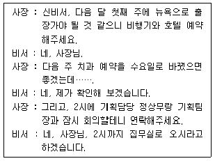
- 뉴욕 호텔은 이전 출장 때 이용하셨던 Swissotel Executive Suite로 예약하시면 될까요?
- 기획담당 정철민 상무님께서는 외근으로 오후 2시 면담은 힘드실 것 같다고 하십니다.
- 치과 예약은 말씀하신대로 수요일 오후 3시로 변경했습니다.
- 뉴욕행 비행기가 모두 만석이셔서 우선 대기자 명단에 올렸습니다.
(정답률: 42%)
9. 다음은 김태식 사장의 일정표이다. 김사장이 이영철 전무와 오찬 중에 비서 이나영은 싱가포르 소재 거래처 임원으로부터 금일 오후 2차 전화회의를 현지시간 3시에 긴급하게 원한다는 전화를 받았다. 다음 예시 중 이나영의 업무대처로 가장 적절한 것은?
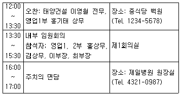
- “말씀하신 일정에 맞춰보겠습니다만 한국 시간 오후 5시 30분은 어떠신지요?”라고 묻는다.
- “지금은 사장님께서 회의 중이셔서 일정확인이 어렵습니다. 1시 30분경에 다시 전화를 주십시오.”라고 전화 응대한다.
- 싱가폴 현지 시간으로 3시이면 한국 시간으로는 오후 4시이므로 일단 주치의 면담을 취소하고 그 시간대에 전화회의 일정을 기록한다.
- 사내 회의를 30분 정도 일찍 종료하면 전화회의가 가능할 것 같아서 일단 2차 전화회의가 가능할 것 같다고 거래처 임원에게 말한다.
(정답률: 19%)
10. 각 대상별 갈등관리방안으로 가장 적절한 것은?
- 평상시 동료에게 좋고 싫은 것을 분명하게 표현하여 갈등이 생기지 않도록 한다.
- 거래처 직원과의 원활한 업무진행을 위해 업무의 정도를 약간 일탈한 대화도 경우에 따라서는 나눌 수 있어야 한다.
- 후배가 수행한 업무의 결과에 대해 잘된 것과 잘못된 부분을 이야기해 주어 발전을 격려한다.
- 상사는 모든 면에서 완벽해야 한다는 마음으로 존경하고 따른다.
(정답률: 60%)
11. 비서는 효과적인 업무처리 뿐 아니라 자기개발을 위해서도 지속적인 네트워크 형성이 매우 중요하다. 다음 중 비서의 올바른 네트워킹 관리 방법으로 가장 거리가 먼 것은?
- 협회에 가입하여 각종 모임에 참석함으로써 동종 직업에 종사하는 사람들과의 관계를 형성한다.
- 각종 세미나나 강연에 참석하여 강사는 물론 다른 참가자들과 적극적으로 인간관계를 형성해 교제를 강화해 나간다.
- 스키 동호회에 가입하여 자신의 취미 생활을 즐길 뿐 아니라 네트워킹을 넓히는 기회로 삼는다.
- 여행사 예약 담당자나 인쇄소 관계자 등 외주업체는 회사 사정에 따라 변경될 수 있으므로 보안 상 관계를 구축하지 않는 것이 좋다.
(정답률: 53%)
12. 서윤경 비서가 메시지를 전달하는 방법에 대한 설명으로 가장 적절한 것은?
- 메모해두었다가 회의가 끝난 후 전하도록 한다.
- 회의실로 들어가 A사 사장님께 조용히 용건을 말한다.
- 메모를 해서 회의에 방해가 되지 않도록 조용히 들어가 메모를 전달한다.
- 회의실 내선전화로 바로 연결해 드린다.
(정답률: 58%)
13. 서윤경 비서가 전화를 받고 메시지를 수신하는 요령에 대한 설명으로 가장 적절치 않은 것은?
- 통화일시, 전화를 건 사람의 이름과 전화번호, 메시지내용 등을 정확히 기록한다.
- 용건의 중요한 사항은 복창하여 확인한다.
- 전언기록부와 메모양식을 활용한다.
- 통화중에 흘려 쓴 글씨는 메모용지에 깨끗이 옮겨 적은 후 폐기한다.
(정답률: 52%)
14. 상사를 대하는 비서의 업무태도로서 가장 부적절한 것은?
- 상사의 요청에 의해 상사 이메일을 관리할 경우 주기적으로 비밀번호를 변경하고 노출되지 않도록 주의한다.
- 상사의 직계가족에 대한 신상정보를 파악하여 상사의 도움 요청시 사내 업무에 장애가 되지 않는 선에서 필요하다면 지원하도록 한다.
- 상사의 직접적인 요청이 없는 한 상사 집무실의 환경정비는 건물 청소부원에게 일임한다.
- 사내 야유회나 회식 자리에서도 비서는 상사 곁에서 보좌하는 자세를 지녀야 한다.
(정답률: 60%)
15. 세한실업의 김선화 비서는 직장 내에서 원활한 인간관계를 성하고자 노력하고 있다. 김 비서의 태도로 가장 적절하지 못한 것은?
- 사내 동료들이 상사의 단점을 이야기 할 때 상사의 가벼운 실수담을 이야기하며 동료들과의 유대감을 형성한다.
- 마감일이 임박하여 일을 서두르는 상사에게 미리 할 수 있는 일들을 찾아서 준비해 드린다.
- 바쁘고 힘들더라도 내색하지 않고 미소와 예의바른 태도로 내방객을 대한다.
- 선배의 업무 처리 방식이 자신의 생각과 다르더라도 처음에는 종래의 방법에 따라서 일을 처리한다.
(정답률: 71%)
16. 비서가 알아야할 선물 관련 매너에 대한 사항으로 가장 거리가 먼 것은?
- 외국인에게는 한국을 상징적으로 나타낼 수 있는 수공예품이나 민예품을 선물로 하면 좋다.
- 종교나 관습으로 인해 하지 말아야 할 선물 품목에 대해 확인한다.
- 부피가 큰 선물인 경우 우편이나 특별운송서비스를 이용해 본국으로 부쳐줄 것을 제의한다.
- 선물을 받을 경우 그 자리에서 열어보면 실례이므로 개봉하지 않는다.
(정답률: 40%)
17. 위와 같은 초대장을 작성할 때 유의할 점으로 가장 적절치 않은 것은?
- 우편보다는 전자우편을 통해 알리도록 한다.
- 2주정도 전에는 수신자가 받을 수 있도록 한다.
- 외부행사의 경우 우천시 행사여부를 기재한다.
- 장소에 대한 정보 (교통, 전화번호 등)도 정확히 기입한다.
(정답률: 60%)
18. 위 문서에 쓰인 용어의 한자어로 바르게 짝지어진 것은?
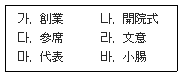
- 가 - 다
- 나 - 라
- 다 - 바
- 라 - 마
(정답률: 32%)
19. 비서가 처리할 상사의 금융관련 업무에 대한 설명으로 가장 적절한 것은?
- 연납 보험료의 미납으로 실효된 보험이 있어 해약 처리하였다.
- 신용카드대금 명세서로 내역을 확인할 수 있으므로 따로 매출전표는 보관하지 않았다.
- 상사의 판공비 지출에 대해서는 연, 월별 장부를 결산해서 예산 관련 부서에 보고하였다.
- 필요한 현금의 신속한 사용을 위해 월 예상 비용을 감안해 출금하여 사무실에 보관하였다.
(정답률: 55%)
20. 미래무역의 박승주사장은 비서인 임주연씨에게 거래처인 세연철강의 김민철 사장과 전화연결을 해달라는 지시를 하였다. 임주연 비서가 전화를 연결하는 방법으로 가장 올바른 것은?
- 상대회사의 비서에게 동시에 상사가 연결될 수 있도록 같이 여쭙자고 한다.
- 박승주 사장을 상대회사의 비서와 먼저 연결시킨다.
- 김민철 사장을 먼저 연결해 놓고 상사와 연결한다.
- 신속한 연결을 위해 김민철 사장의 핸드폰으로 바로 전화한다.
(정답률: 56%)
2과목: 경영일반
21. 기업의 사회적 책임에 대한 설명으로 가장 옳지 않은 것은?
- 한국은 1997년 외환위기 이후 수많은 기업이 도산되고, 기업의 비도덕적인 행위가 사회에 미치는 파급효과가 대단히 크고 중요하다는 것을 깨닫게 되면서 기업의 사회적 책임 개념이 대두되었다.
- 기업은 좋은 공적이미지를 유지하기 위해 사회적 책임을 수행해야 한다.
- 그린마케팅이란 환경비용의 규명, 측정, 배분을 경영의 사결정에 반영하고 그 결과를 기업의 이해관계자에게 알리는 것이다.
- 기업의 사회적 책임은 종업원에 대한 안전한 작업환경의 제공, 적절한 보상, 인권보상 등의 종업원에 대한 책임을 포함한다.
(정답률: 40%)
22. 다음은 중소기업과 대기업의 장점과 단점에 대한 설명이다.가장 적절하지 않은 것은?
- 중소기업은 조직이 작고, 활동 내용이 단순하므로 임기응변의 조치가 쉬운 장점이 있다.
- 중소기업은 자본력이 약하고, 시장의 영향을 받기 쉬우며, 기술의 능률화가 어려운 단점이 있다.
- 대기업은 고성능의 기계이용, 대량생산, 분업과 협업의 자유성, 대량생산 및 대량구매에 따른 이익을 얻을 수 있다는 장점이 있다.
- 대기업은 기계화의 후진성과 판로가 협소하다는 단점이 있다.
(정답률: 67%)
23. 국제 투기자본이 나라 경제를 교란시키는 걸 막기 위해서 단기 외환거래에 저율의 단일세율로 부과하는 세금을 무엇이라 하는가?
- 버핏세
- 토빈세
- 로빈후드세
- 관세
(정답률: 50%)
24. 다음 중 고객관계경영(CRM)에 대한 설명으로 가장 거리가 먼 것은?
- 고객관계경영은 콜센터와 캠페인 관리도구 등을 적극 활용한다.
- 고객관계경영은 고객, 정보, 사내 프로세스, 전략, 조직등 경영전반에 걸친 관리체계이다.
- 고객관계경영을 통해 선별된 고객으로부터 수익을 창출할 수 있다.
- 고객관계경영은 세분화마케팅(segmentation marketing)과 틈새마케팅(niche marketing)에서 진화한 것으로 이해할 수 있다.
(정답률: 35%)
25. 다음 중 벤처기업에 대한 설명으로 가장 적절하지 않은 것은?
- 벤처기업은 1인 또는 소수의 핵심적 창업인이 기술혁신의 개발아이디어를 상업화하기 위해 설립하는 신생기업이다.
- 벤처기업은 높은 위험부담이 있으나 성공할 경우 높은 이익이 기대되는 회사이다.
- 벤처기업에는 벤처캐피탈과 엔젤이라는 투자제도가 있다.
- 기관투자자 제도인 엔젤은 투자 후 기업에 경영진을 파견하거나 정기적으로 만나 경영전략을 토의하면서 하나의 회사를 공동으로 경영하는 것이다.
(정답률: 63%)
26. 다음 중 직무설계에 관한 설명으로 가장 옳지 않은 것은?
- 직무설계는 조직 내 업무를 수행하기 위해 요구되는 다양한 과업들을 서로 연결시키고 맞추어 조직화하는 과정이다.
- 직무충실화는 직무의 깊이를 늘리는 것으로 직무를 수행하는 구성원이 스스로 작업에 대한 통제권한을 많이 가질 수 있도록 하는 것이다.
- 직무순환과 직무확대를 통하여 구성원들의 직무수행을 다양화하고 지루함을 없애도록 설계할 수 있다.
- 직무순환은 개인차원의 직무설계로서 한 작업자가 수행하는 과업의 수를 수평적으로 확대하되 권한 내지 책임을 증가시키지 않은 경우를 말한다.
(정답률: 39%)
27. 다음 중 경영환경에 대한 설명으로 가장 옳지 않은 것은?
- 기업과 환경과의 관계는 동태적이다.
- 경제, 정치, 법적, 사회문화는 기업경영에 직접적 영향을 미치는 과업환경이다.
- 기업경영에 직접적 영향을 미치는 과업환경은 고객, 경쟁사, 공급자, 노동시장으로 이루어진다.
- 과업환경 중 고객은 기업경영에 직접적인 영향을 미치므로 고객지향적 경영을 해야 한다.
(정답률: 47%)
28. 대차대조표와 관련된 용어에 대한 설명 중 가장 옳지 않은 것은?
- 소유주지분은 기업에 소유주가 출자한 재무적 자원과 기업이 벌어들인 이익 중 소유주에게 돌려주지 않고 유보시킨 이익의 합계액이며, 자본이라고도 한다.
- 기업의 자산 총액은 그 자산에 대한 청구권의 총액과 항상 일치한다.
- 고정자산 중 이연자산은 영업권, 공업소유권, 광업권 등을 말한다.
- 부채는 과거거래의 결과 발생한 것이라는 특성을 갖는다.
(정답률: 20%)
29. 다국적 기업에 대한 설명으로 가장 적절하지 않은 것은?
- 다국적기업은 둘 이상의 국가에 현지법인을 갖고 있는 기업을 말한다.
- 다국적기업은 여러 국가에서 현지 생산 및 판매 활동을 영위하는 국제기업이다.
- 다국적기업은 해외투자활동, 기술이전활동, 해외건설활동 등의 경영활동을 수행한다.
- 다국적 기업의 해외투자활동 중 현지공장 및 법인 설립은 해외 간접투자의 방법이다.
(정답률: 54%)
30. 다음 중 법률적으로 독립적인 형태의 기업이지만, 출자 등을 기초로 지배종속 관계에 의해 형성되는 기업결합 방식을 무엇이라 하는가?
- 카르텔
- 콘체른
- 트러스트
- 콤비나트
(정답률: 44%)
31. 다음 중 의사소통에 대한 설명으로 가장 옳지 않은 것은?
- 의사소통은 상의하달식, 하의상달식, 수평적 소통이 있으며, 일방향소통과 쌍방향소통으로 나누기도 한다.
- 사장이 직원에게 지시, 칭찬 및 질타를 하는 것은 상의 하달식 의사소통에 속한다.
- 부하직원이 상사에게 보고하는 것은 하의상달식 의사소통에 속한다.
- 조직은 공식적 의사소통 경로를 명확히 갖고 있는데, 이를 그레이프바인(grapevine)이라고 한다.
(정답률: 43%)
32. 전자상거래의 유형에 대한 설명으로 가장 적절하지 않은 것은?
- B2B - 기업과 기업이 거래하는 규모가 가장 큰 형태이다.
- B2C - 기업이 소비자를 상대로 거래하는 형태이다.
- G2B - 정부와 기업 간의 거래이다.
- C2C - 기업과 기업 간의 거래이다.
(정답률: 55%)
33. 다음 중 기업의 각종 계약을 통한 국제화와 관련된 설명으로 가장 거리가 먼 것은?
- 간접투자란 A국의 '가'기업이 B국의 '나'기업의 주식의 전부를 소유하여 경영 참여 방식으로 해외에 진출하는 전략이다.
- 라이센싱(Licensing)이란 라이센스 보유 기업이 자신이 보유하고 있는 특허, 등록상표 등을 정해진 기간 동안일정한 수수료나 로열티를 받기로 외국 기업과 계약을 하여 외국에 진출하는 방식이다.
- 경영관리계약이란 일정기간 동안 한 기업이 외국의 다른기업에게 대가를 지불하고 경영을 맡기는 방식이다.
- 전략적 제휴란 경쟁관계에 있는 두 기업이 경쟁기업과 협력관계를 맺는 것을 말한다.
(정답률: 46%)
34. 다음 중 경영통제의 기법에 대한 설명으로 가장 옳지 않은 것은?
- 경영 통제는 대체로 '통제표준의 설정 → 행동의 기록 → 기록의 보고 → 직무수행의 평가 → 시정조치'의 절차로 이루어진다.
- 이익통제, 예산통제, 원가통제 등은 진행통제에 해당한다.
- 내부통제의 구체적 내용은 표준원가계산, 내부감사제도, 일반회계 등의 계산제도의 전 체계이다.
- 외부감사제도인 업무 감사는 특정 조직의 영업 활동 및 업무 절차에 대해 그 능률과 효과를 평가할 목적으로 실시한다.
(정답률: 60%)
35. 다음 중 기업의 인수 합병(M&A)에 대한 설명으로 가장 옳지 않은 것은?
- 기존의 다른 기업을 인수하여 신속하게 새로운 사업을 시작하거나 규모를 키워 시장 지배력을 증대하거나 위험을 분산하기 위한 경영 기법이다.
- 경쟁관계의 동업종 기업을 인수하여 규모의 경제나 시장지배력을 강화하는 것을 수직적 인수합병이라고 한다.
- 상대 기업과의 합의 여부에 따라 우호적 인수합병과 적대적 인수합병으로 구분한다.
- 합병의 방식에 따라 흡수합병과 신설합병이 있다.
(정답률: 52%)
36. 다음 중 스톡옵션에 대한 설명으로 가장 적합한 것은?
- 스톡옵션이란 기업이 임직원에게 자기회사 주식을 미리 약정한 가격으로 일정한 수량을 일정한 기간 내에 매매할 수 있는 권리를 주는 것이다.
- 스톡옵션은 직무분석을 기초로 직무의 난이도나 위험도 등에 따라 차등지급하는 보상체계이다.
- 스톡옵션은 동일노동에 대하여 동일임금을 지급한다는 원칙에 입각하여 시행된다.
- 스톡옵션은 연공서열에 의해 결정되며, 보통 근속연수가 많아짐에 따라 지급액은 많아진다.
(정답률: 50%)
37. 기존 조직에 속해서 업무를 하면서 동시에 다른 프로젝트 조직에도 참여하는 형태로 복수의 명령체계로 인해 책임이 명확하지 않고 혼란을 줄 수 있지만 인력 자원의 효율적인 활용이 가능한 조직 구조를 무엇이라 하는가?
- 위원회 조직
- 프로젝트 조직
- 사업부제 조직
- 매트릭스 조직
(정답률: 45%)
38. 다음 중 경기침체가 심할 때 이를 해결하기 위해 한국은행이 실시하는 경기조절정책으로 가장 적합하지 않은 것은?
- 기준금리를 인하한다.
- 리보 가산금리를 인하한다.
- 지급준비율을 인하한다.
- 공개시장조작을 위해 국공채 등의 채권을 매입한다.
(정답률: 27%)
39. 다음 중 기업이 유통경로관리를 위해 도입하는 정보처리시스템으로, 바코드를 이용하여 무엇이, 언제, 어디서, 어떻게, 얼마나 판매되었는가의 유통정보를 분석, 활용가능하게 하는 관리시스템을 나타내는 용어로 가장 적합한 것은?
- POS
- TPS
- MRP
- PLC
(정답률: 39%)
40. 다음 중 리더십 이론에 관한 설명으로 가장 적절한 것은?
- 허쉬와 블랜차드의 수명주기이론에서는 하급자의 성숙도에 따라 적합한 리더십 유형을 보일 때 조직유효성이 올라간다고 주장한다.
- 리더십 특성이론은 리더십을 발휘하는 리더들의 행동양식에 초점을 두고 있다.
- 피들러의 상황모형에 따르면 효과적 리더십은 하급자의 준비정도와 상황의 호의성에 따라 결정된다.
- 블레이크와 모튼의 리더십이론에서는 인간중심리더가 과업중심리더보다 성과가 훨씬 높아서 인간에만 관심을 갖는 리더가 우수한 리더이며 따라서 인간중심리더로의 방향성을 제시한다.
(정답률: 33%)
3과목: 사무영어
41. Choose one phrase which has a grammatical error.
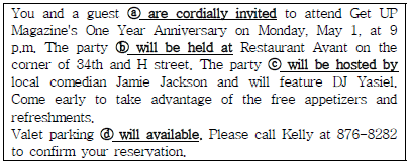
- ⓐ are cordially invited
- ⓑ will be held at
- ⓒ will be hosted by
- ⓓ will available
(정답률: 34%)
42. According to the information on two business cards below, which of the followings is not true?
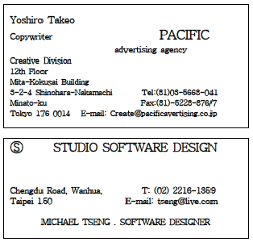
- Yoshiro Takeo works in Tokyo.
- You can contacts Michael Tseng by mail, e-mail. or telephone.
- Michael Tseng is a software designer.
- Yoshiro Takeo's office is on the twentieth floor.
(정답률: 49%)
43. 다음 대화의 밑줄 친 문장을 영어로 바르게 옮긴 것은?
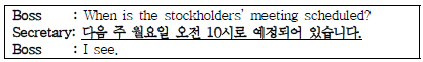
- It is scheduled Monday next at 10 a.m.
- It is scheduled next Monday at 10 a.m.
- It is scheduled 10 a.m. next Monday.
- It is scheduled at the next 10 a.m. on Monday.
(정답률: 56%)
44. Choose the most appropriate expression for the underlined blank.
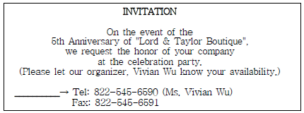
- Ext.
- P.S.
- Dir.
- R.S.V.P.
(정답률: 58%)
45. Choose one which does not match each other.
- CONFIDENTIAL - Only the addressee should read it.
- REGISTERED - the delivery of a piece of mail outside the country.
- URGENT - It should be sent as quickly as possible.
- DO NOT BEND - Keep it flat.
(정답률: 47%)
46. Which of the following sets is the most appropriate for the blank (A) and (B)?
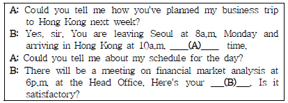
- (A) present - (B) plan
- (A) actual - (B) plan
- (A)local - (B)itinerary
- (A) present - (B) itinerary
(정답률: 59%)
47. According to the conversation, which of the followings is true?
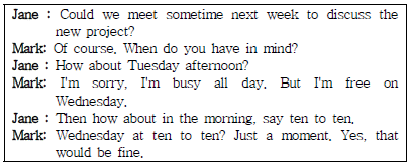
- Jane is talking to Mark to make an appointment.
- Jane is meeting Mark on Tuesday afternoon.
- Mark and Jane arrange to meet on Wednesday at 10:10 a.m.
- Mark has some time to meet Jane Tuesday morning.
(정답률: 38%)
48. What would the secretary do after the following conversation? Choose the correct one.
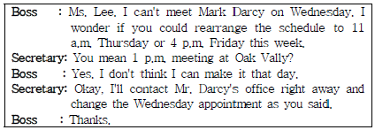
- The secretary will visit Mr. Darcy's office on Wednesday to discuss the schedule.
- The secretary will call Mr. Darcy's office and apologize for changing the schedule.
- The secretary will call Mr. Darcy's office to reconfirm the Wednesday schedule.
- The secretary will visit Mr. Darcy's office on Thursday and Friday.
(정답률: 30%)
49. Which of the followings is the most appropriate expression for the blank?
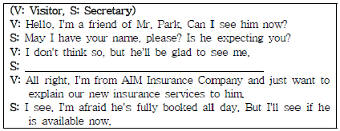
- May I ask who's calling, please?
- Could you write your name in the visitor's book, please?
- May I ask what your visit is in regard to?
- Could you spell your name, please?
(정답률: 58%)
50. Choose the most suitable words for blank (A) and (B).
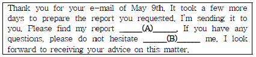
- (A) attached, (B) contacting
- (A) attached, (B) to contact
- (A) attaching, (B) contacting
- (A) attaching, (B) to contact
(정답률: 50%)
51. 다음 대화의 (A), (B) 에 들어갈 단어로 가장 적절한 것은?
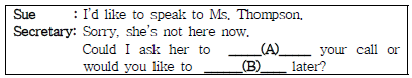
- (A) return, (B) call back
- (A) call back, (B) speak
- (A) call back, (B) return
- (A) check, (B) return
(정답률: 48%)
52. Which of the following English expressions is not appropriate?
- I just couldn't get through to you. - 당신과 통화가 안 됐습니다.
- Would you like to leave a message? - 메시지를 남기시겠어요?
- You have the wrong number. - 전화를 잘못 거셨습니다.
- I kept getting a busy signal. - 너무 바빠서 당신에게 전화를 못했습니다.
(정답률: 43%)
53. Choose one which is not true to the below document.
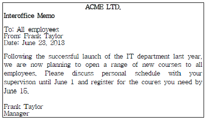
- 'Memo' is a short form of 'Memorandum'.
- It is a kind of business correspondence to communicate with people in the same department.
- All the employees in ACME LTD. are receiving this message.
- It is a notice of offering an interoffice education program.
(정답률: 42%)
54. Read the below Q&A dialogues and choose one that does not match correctly.
- Q: What does your company do?
A: We make televisions. - Q: Who are you with?
A: I work for KGI insurance company. - Q: What department are you in?
A: I work at the General Affairs Department. - Q: What do you do for a living?
A: When I'm free, I usually use a computer.
(정답률: 36%)
55. 다음 중 약어의 성격이 다른 하나는?
- Justin Bateman, CEO
- Lauren Parket, CFO
- John Austin, VP
- Peter Collins, CPA
(정답률: 40%)
56. Which of the followings is in the most appropriate order?
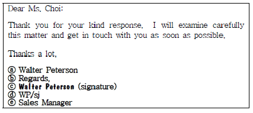
- ⓒ - ⓑ - ⓐ - ⓔ - ⓓ
- ⓑ - ⓐ - ⓓ - ⓔ - ⓒ
- ⓑ - ⓒ - ⓐ - ⓔ - ⓓ
- ⓒ - ⓑ - ⓐ - ⓓ - ⓔ
(정답률: 50%)
57. The following is what you may hear from an answering machine of a company. Which of the followings is the most appropriate expression for the blanks?
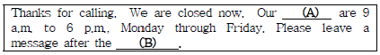
- (A)office hours - (B)tone
- (A)office hours - (B)dial
- (A)working times - (B)tone
- (A)working times - (B)dial
(정답률: 25%)
58. Read the following conversation and answer the questions. Which df the follwings is most appropriate match for the blank (A) and the blank (B)?
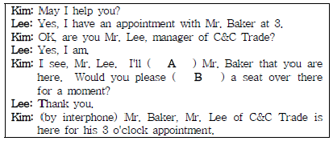
- (A)charge - (B)take
- (A)ask - (B)make
- (A)tell - (B)have
- (A)talk - (B)sit
(정답률: 64%)
59. Which of the followings is the most appropriate expression for the blank?
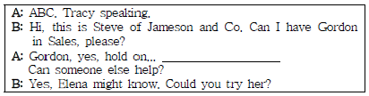
- You're through now.
- May I ask what it's about?
- I'll see if he's available.
- His line's engaged, I'm afraid.
(정답률: 22%)
60. What is the following document called in English?
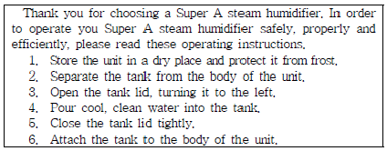
- memorandum
- itinerary
- prescription
- manual
(정답률: 46%)
4과목: 사무정보관리
61. 아래 편지를 150명의 주요고객에게 전달하기에 가장 유용한 기능은?
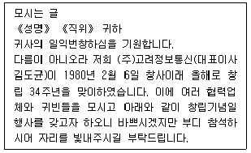
- 스타일링
- 라벨링
- 메일머지
- 데이터베이스
(정답률: 56%)
62. 다음 중 문서 작성시 수신자에 대한 경칭으로 가장 바람직한 것을 순서대로 나열하면? (순사대로 (가), (나), (다), (라))
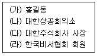
- 님 - 귀중 - 귀하 - 각위
- 귀하 - 각위 - 귀중 - 제위
- 귀하 - 귀중 - 귀중 - 각위
- 님 - 각위 - 귀하 - 제위
(정답률: 35%)
63. 창업한 회사에 총무업무를 담당하는 한비서는 회사의 문서관리 체계를 잡고자 한다. 직원들은 회사에 도달한 서류가 언제 접수 되었는지 알지도 못하고 일처리가 더디다. 즉각 답신을 할 수 있는 문서인데도 회신을 늦추기만 한다. 이런 상황에서 한비서가 도입할 것으로 가장 적절한 것은?
- 접수 일부인 사용
- 우체국 이용
- 우편물 발신부 작성
- 회람제도
(정답률: 38%)
64. 다음 중 회사 내 기밀정보 유지를 위한 비서의 행동으로 가장 옳지 않은 것은?
- 업무 관련 서류는 문서 세단기를 이용하여 파본하여 버리고, 문서세단기가 없을 경우 두 번 찢어 버린다.
- 중요 문서는 인편으로 직접 전달하고 인수자의 서명을 받는다.
- 점심시간이나 퇴근시 서류함이나 캐비닛을 잠그고 열쇠는 잘 보관한다.
- 문서 공유는 최소화하고, 문서를 공유해야 하는 경우에 는 해당 폴더만 공유한다.
(정답률: 52%)
65. 차비서는 국제회의에 참석한 상사의 사진을 찍어 회사 내홍보팀에 보내려고 한다. 현재 차비서는 usb 등과 같은 기기간 연결선이 없으나, 스마트폰에 있는 사진을 노트북으로 옮겨 편집을 하여 홍보팀으로 보내야 한다. 이때 사용할 수 있는 휴대폰과 PC간에 사진 파일을 전송할 수 있는 무선전송기술을 무엇이라 하는가?
- 블루투스
- 클라우딩
- SNS
- 와이파이
(정답률: 52%)
66. 다음 보기의 공문서 작성 시 잘못된 부분을 수정한 것으로 가장 적절하지 않은 것은?
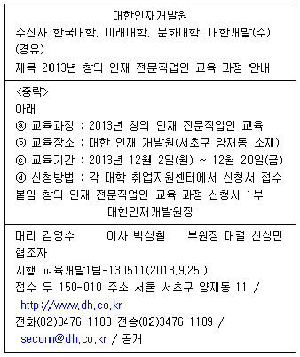
- 붙임 항목의 맨 뒤에 “.”을 찍고 1자(2타) 띄우고 '끝.'을 기입한다.
- 교육기간의 연월일을 온점(.)으로 변경한다.
- 수신자 목록을 발신명의 아래에 수신처 참조 목록으로 내려서 기입한다.
- 시행 항목의 시행일자 뒤에 수신기관의 문서보존기간 3년을 삽입한다.
(정답률: 44%)
67. 다음은 비서들의 이메일 사용방법이다. 이메일 사용방법이 가장 적절하지 못한 비서는?
- 김비서 : 수신자인 전무님 외에 담당부서 임원, 총무팀 담당자에게도 메일을 발송하기 위해 cc를 사용하였다.
- 박비서 : 수신자 모르게 eeele@hotmail.com으로 메일을 보내기 위해 bcc를 사용하였다.
- 송비서 : outlook express의 주소록을 '내보내기' 하여 확장자를 wab 파일로 저장하였다.
- 이비서 : 매일 수신하는 이메일이 너무 많아서 sorting 기능을 사용해 메일을 분류하였다.
(정답률: 29%)
68. 아래 기사에 대한 내용 중 가장 적절하지 않은 것은?
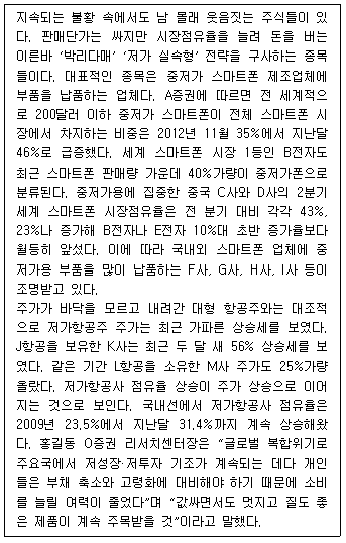
- '박리다매' 주식은 F사, G사, H사, I사의 주식이다.
- 저가항공사 점유율은 계속 상승세를 보이고 있는 반면 대형 항공주는 주가 하락세를 보였다.
- 글로벌 복합위기와 개인들의 부채 축소, 고령화 대비에 따라 값싸고 질 좋은 제품이 주목받을 것이다.
- B전자가 주력으로 판매하는 스마트폰이 중저가 폰이다.
(정답률: 31%)
69. 사무 직업병 예방을 위한 방법으로 가장 거리가 먼 것은?
- 키보드 높이와 팔꿈치 높이가 수평을 이룰 수 있게 작업대의 높이를 맞춘다.
- 50분 작업시 약 10분정도 휴식을 취하거나 스트레칭을 하도록 한다.
- 부득이하게 장시간 컴퓨터 작업을 한 후에는 먼 곳을 응시하거나 눈을 감는 것과 같이 눈 건강을 위해 조치를 취한다.
- 컴퓨터 화면은 가능한 밝게 유지하고 정기적인 안과검사를 받는다.
(정답률: 62%)
70. 전자문서 작성의 이점으로 가장 적절하지 않은 것은?
- 작성부터 결재까지 시간의 단축 효과를 볼 수 있다.
- 문서수발에 따른 인력, 시간, 비용 등이 절감된다.
- 문서의 저장, 보관, 검색이 용이하다.
- 같은 메일을 초당 수십통씩 보내는 메일폭탄을 사용할 수 있다.
(정답률: 66%)
71. 헤드헌팅사의 정비서는 구인 정보를 통계청의 『한국표준 직업분류』항목에 따라 구분하려고 한다. 정비서가 채택한 자료정리 방법은?
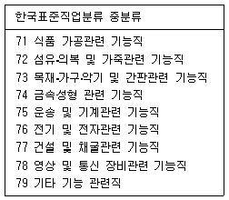
- 대표자명별 분류
- 주제별 분류
- 지역별 분류
- 회사명별 분류
(정답률: 60%)
72. 다음 중 기사 스크랩을 위한 비서의 태도로 가장 바람직한 것은?
- 인터넷 기사는 신문 기사보다 신뢰성이 떨어지므로 활자로 찍혀진 신문 기사를 찾아 스크랩한다.
- 잡지 기사는 신문 기사보다 시사성이 떨어지므로 유사한 내용의 신문기사가 있다면 스크랩할 필요가 없다.
- 신문 기사는 필요한 부분을 오리거나 복사하여 스크랩하는데 원본을 잘라야 하는 경우에는 2∼3일 후에 스크랩 한다.
- 중요 기사를 스크랩하였으므로 스크랩한 내용은 버리지 않고 장기간 보관한다.
(정답률: 38%)
73. 다음 중 숫자식 문서정리 방법의 특징에 대한 설명으로 가장 옳지 않은 것은?
- 폴더의 무한정 확장이 가능하다.
- 배정된 숫자로 폴더를 정리하는 직접 정리 방법을 사용한다.
- 숫자가 명칭(이름)을 대신하므로 정보 보안 유지에 탁월하다.
- 동일한 숫자가 한 번만 배정되어 정확한 분류가 가능하다.
(정답률: 35%)
74. 동서 은행에 근무하는 정비서의 상사인 박전무는 임원 회의에서 발표를 할 예정이다. 이 경우 정비서의 프레젠테이션 자료를 준비하는 업무처리로 가장 적절하지 않은 것은?
- 수치데이터가 많으므로 쉽게 이해할 수 있도록 그래프를 사용하였다.
- 유인물은 발표물의 슬라이드가 1페이지당 8개 슬라이드가 들어가도록 출력해서 페이지수를 최대한 줄였다.
- 슬라이드 색과 디자인 서식을 적절히 선택해 단순화시켰고, 한 번에 세 가지 이상의 색은 가급적 쓰지 않았다.
- 프레젠테이션 설명 순서에 따라서 그래프가 순서대로 나타나도록 애니메이션 효과를 주었다.
(정답률: 57%)
75. 다음 중 주제별 분류법에 대한 설명으로 가장 적절하지 않은 것은?
- 같은 종류의 주제나 활동에 관련된 문서를 한 곳에 모을 수 있다.
- 서류가 많아져도 무한하게 확장이 가능하다.
- 다른 관점으로도 문서를 찾을 수 있도록 상호참조표시가 필요하다.
- 기밀을 유지하는데 가장 유리한 분류법이다.
(정답률: 63%)
76. 다음 중 사무실 비품 관리를 위한 비서의 행동으로 가장 옳지 않은 것은?
- 김비서는 사무기기/비품 대장을 작성하여 구입날짜, 수리 기간, 소모품 비용 등을 꼼꼼히 기록해 둔다.
- 황비서는 고장 난 사무기기를 모아두었다가 한꺼번에 관계부서에 연락해 수리한다.
- 장비서는 사무비품의 위치를 미리 정해 놓고 제자리에 정리정돈 한다.
- 강비서는 종이, 볼펜 같은 사무용품을 떨어지기 전에 미리 구매신청 하여 충분한 양을 준비해 둔다.
(정답률: 66%)
77. 우리나라에서 채택하고 있는 문서의 효력발생 시기는?
- 시행문서의 발송 시점부터
- 시행문서의 작성 완료 시점부터
- 시행문서가 수신자에게 도달되었을 때부터
- 시행문서가 수신자에게 도달된 후 수신자가 문서내용을 알게 된 때부터
(정답률: 46%)
78. 아래 박비서의 행동 중 사무기기의 적절한 사용이 아닌 것은?
- 컴퓨터의 영상을 확대하여 스크린에 비추기 위해 프로젝터를 사용했다.
- 소량으로 제작되는 서류의 제본을 위해 문서세단기를 사용했다.
- 소형 제품을 관중에게 보여주기 위해서 실물화상기를 사용했다.
- 수기로 작성된 보고서 초안을 팩시밀리를 통해 전달하였다.
(정답률: 57%)
79. 다음은 전국 전월세거래량을 비교한 그래프이다. 이에 대한 설명으로 가장 적절하지 않은 것은?
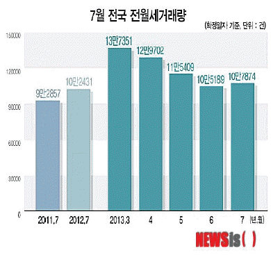
- 2013년 7월 전국 전월세 거래량은 전년 동월대비 증가하였다.
- 2012년 7월 전국 전월세 거래량은 전년 동월대비 증가하였다.
- 2013년 7월 전국 전월세 거래량은 2011년 동월대비 증가하였다.
- 2013년 3월 전국 전월세 거래량은 역대 가장 많은 거래량을 보였다.
(정답률: 57%)
80. DBMS에 대한 설명으로 가장 잘못된 것은?
- 데이터를 효과적으로 이용할 수 있도록 정리·보관하기 위한 소프트웨어이다.
- 질의를 이용해서 추출한 결과는 폼, 보고서 등에서 테이블처럼 사용될 수 없다.
- database management system을 의미한다.
- 데이터의 추가, 변경, 삭제, 검색 등과 같은 관리가 가능하다.
(정답률: 58%)